Planning
A Renovation Plan for the Years Ahead
Choose improvements that support how your household may change.
September 2026 topic · 5 min readOakwaters Construction / The Journal
Design inspiration, renovation planning, and practical guidance for homes across Southern Ontario.
Read our featured story →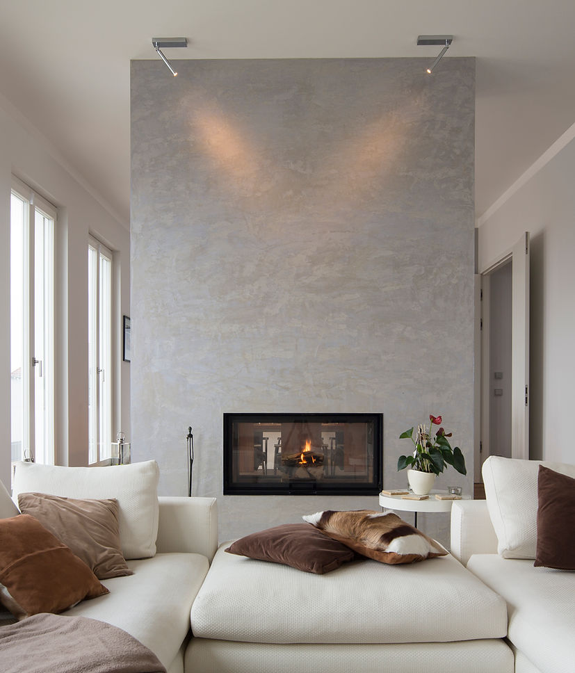
Choose improvements that support how your household may change.
September 2026 topic · 5 min read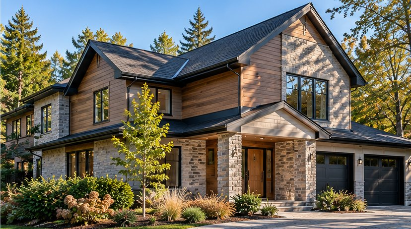
Sequence repairs and finish work for a durable result.
August 2026 topic · 5 min read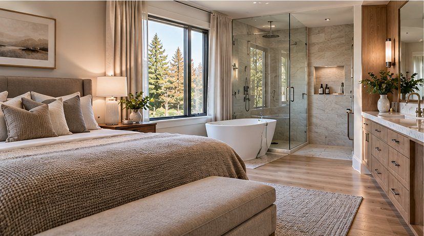
Coordinate sleeping, bathing, dressing, storage, and privacy.
July 2026 topic · 5 min read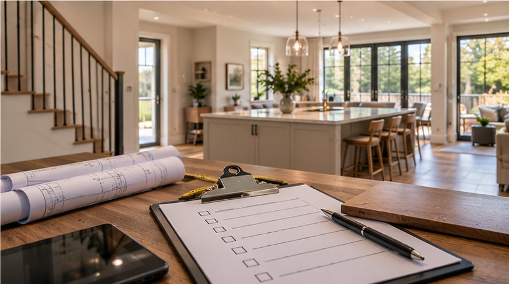
Prepare for handover with an organized review of the finished work.
June 2026 topic · 5 min read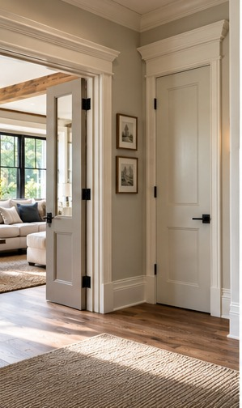
Use small architectural details to create a consistent interior language.
May 2026 topic · 5 min read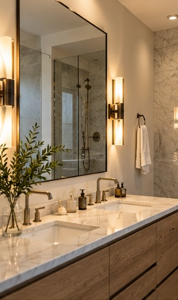
Coordinate illumination, reflection, and electrical planning.
April 2026 topic · 5 min read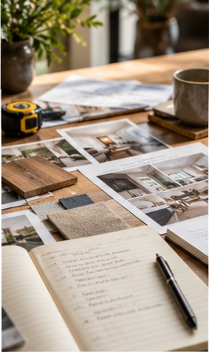
Translate inspiration images into a clear hierarchy of needs.
March 2026 topic · 5 min read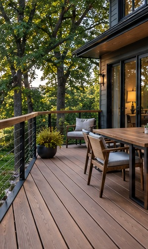
Consider foundations, drainage, access, and long-term upkeep.
February 2026 topic · 5 min read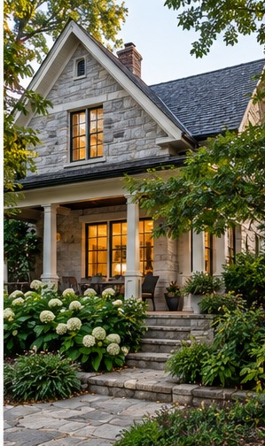
Preserve defining details while upgrading function and comfort.
January 2026 topic · 5 min read
Compare aesthetics with heat, staining, repair, and maintenance needs.
December 2025 topic · 5 min read
Improve workflow with counter space, storage, and durable finishes.
November 2025 topic · 5 min read
Balance independence, accessibility, privacy, and shared space.
October 2025 topic · 5 min read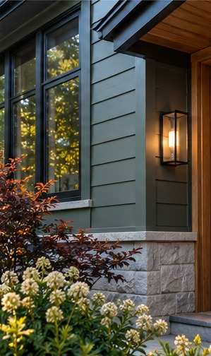
Evaluate colour alongside roof materials, masonry, trim, and daylight.
September 2025 topic · 5 min readKnow when professional review and municipal approval may be required.
August 2025 topic · 5 min read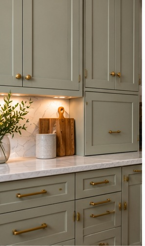
Focus on internal organization, clearances, and hardware quality.
July 2025 topic · 5 min read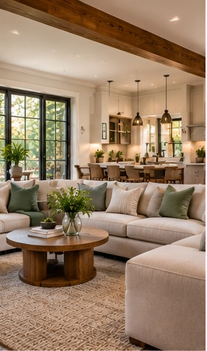
Use structure, lighting, and furniture zones to create connected spaces.
June 2025 topic · 5 min read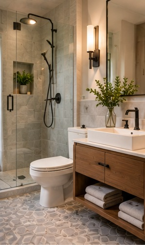
Improve storage, sightlines, and movement without chasing square footage.
May 2025 topic · 5 min read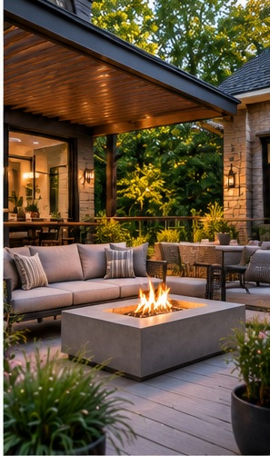
Create outdoor zones that suit sun, wind, privacy, and seasonal use.
April 2025 topic · 5 min read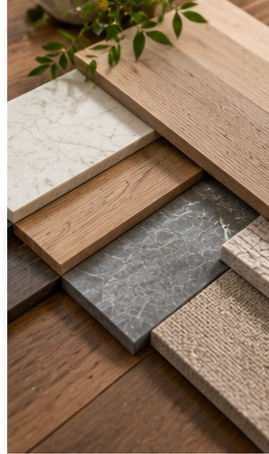
Match flooring to moisture exposure, traffic, comfort, and maintenance.
March 2025 topic · 5 min read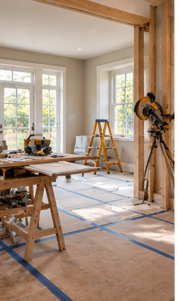
Plan around dust, noise, access, and temporary routines.
February 2025 topic · 5 min read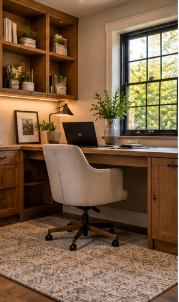
Design for concentration, video calls, storage, and future uses.
January 2025 topic · 5 min read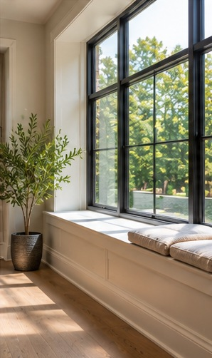
Plan window changes around comfort, proportion, and performance.
December 2024 topic · 5 min read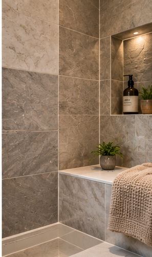
Balance visual character with slip resistance, grout maintenance, and scale.
November 2024 topic · 5 min read
Choose island dimensions that preserve movement and useful work surfaces.
October 2024 topic · 5 min read
Start with moisture, headroom, insulation, and egress before planning finishes.
September 2024 topic · 5 min read
Look beyond the total to understand what is actually being offered.
August 2024 topic · 5 min read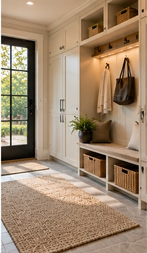
Design an entry that handles wet coats, footwear, and everyday transitions.
July 2024 topic · 5 min read
Build a budget around scope, allowances, and uncertainty.
June 2024 topic · 5 min read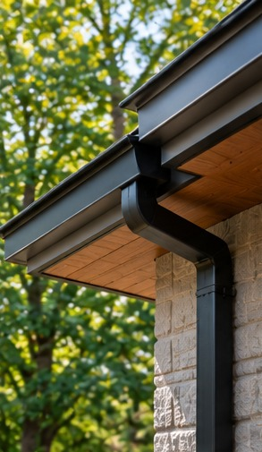
Coordinate siding, trim, entry details, and drainage as one system.
May 2024 topic · 5 min read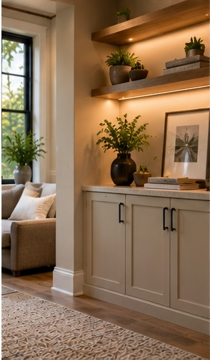
Treat storage as part of the architecture rather than an afterthought.
April 2024 topic · 5 min read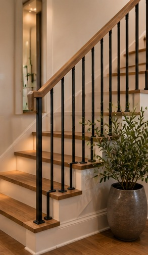
Use layers of light to support tasks, atmosphere, and architectural details.
March 2024 topic · 5 min read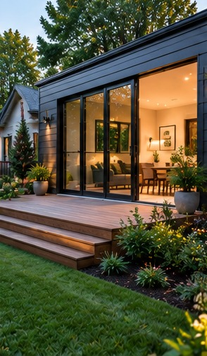
Think about structure, services, circulation, and the relationship to the existing home.
February 2024 topic · 5 min read
Select finishes for maintenance, repairability, and real household use.
January 2024 topic · 5 min read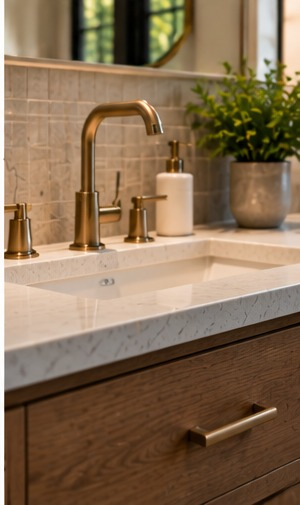
Make waterproofing, ventilation, and comfortable clearances part of the design conversation.
December 2023 topic · 5 min read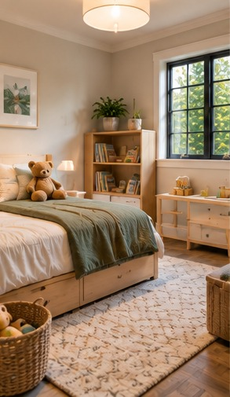
Evaluate circulation, preparation zones, storage, and lighting before choosing cabinet finishes.
November 2023 topic · 5 min readCreate a clear scope, establish priorities, and identify decisions that must happen before demolition.
October 2023 topic · 5 min read